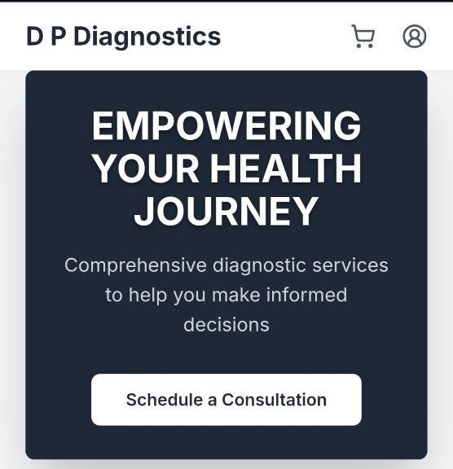
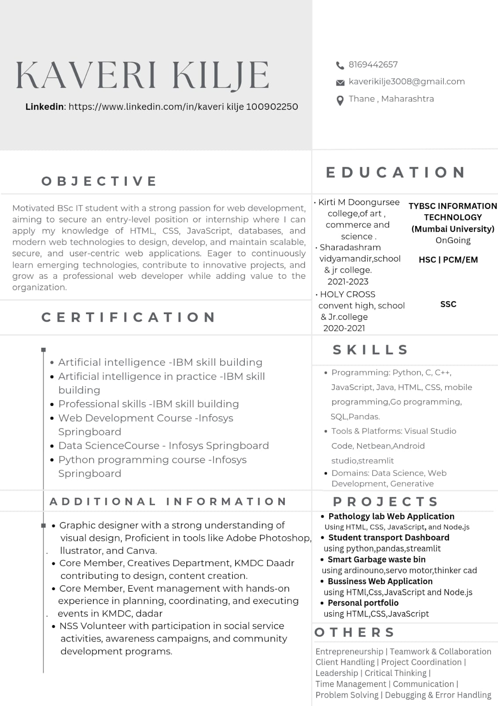

Personal Portfolio Website
A responsive portfolio showcasing my skills, education, projects, achievements and contact information.
Hello, I'm Kaveri Kilje
B.Sc. IT Student · Web Developer · Data Analytics Intern
I'm passionate about web development, programming, data analytics and creative design. I enjoy turning ideas into useful digital experiences while continuously improving my technical skills.
01 / About
A student building practical skills through projects, internships and continuous learning.
I'm Kaveri Kilje, a Third Year B.Sc. Information Technology student at Kirti M. Doongursee College.
I enjoy creating responsive websites, exploring programming, working with data and learning how technology can solve real-world problems.
I also enjoy graphic design and creating visual content using Canva. My goal is to grow through hands-on work, teamwork and new opportunities.
02 / Skills
A growing toolkit across web development, programming, databases and design.
03 / Selected Work
Practical projects focused on responsive websites, data insights and useful digital experiences.
A responsive portfolio showcasing my skills, education, projects, achievements and contact information.

A diagnostic laboratory website designed to present test information, pricing, booking and contact details.

A service website that helps customers explore appliance repair services and find booking and contact information.
A student survey and dashboard project exploring transportation preferences through data analysis and visual summaries.
A smart waste-management project designed to explore technology-enabled waste collection and sustainability.
04 / Experience
Internship experience and ongoing professional learning.
Completed a two-month internship in data analytics. Add the actual tools, tasks and outcomes from your internship to highlight your contribution.
Currently undertaking an internship with Cubo Academy. Role-specific responsibilities and project details can be added as the internship progresses.
05 / Education
My academic foundation in information technology.
Kirti M. Doongursee College · Third Year
Sharadashram Vidyamandir School & Junior College
Holy Cross Convent High School
06 / Achievements
Community, initiative and creativity.
Participated in social service and community activities; nominated for the Best NSS Volunteer Award 2025–26.
Student partner experience focused on communication, outreach and student engagement.
Create posters and social media content using Canva, with a focus on clear and engaging visuals.
07 / Resume
Download my resume for a quick overview of my education, skills, projects and experience.

If you later upload a PDF resume, change both resume links to its exact filename.
08 / Contact
I'm happy to connect about internships, projects, collaboration and learning opportunities.